Bantam Milling - 2
This guide is part 2 of making PCBs with the Bantam milling machine. We will be focusing on making double-sided boards, and milling SVG files.
If you have not yet gone through the Bantam Setup guide, you must go through that guide first before moving on to this one. Also the Bantam Milling - 1 guide describes milling a single-sided PCB for the first time.
Engrave an Image
Bantam is able to not only mill Eagle files, but it can also mill from SVG files. This means that, for example, we could create a drawing in Adobe Illustrator, and open it in Bantam to mill that drawing on our PCB.
Let's say I have a file open in Bantam, to mill the top of a PCB.
That empty section on the right looks lonely. Let's add a drawing to it.
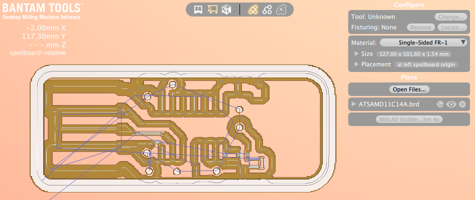If found an SVG of Homer Simpsons face online. I'd like to add this to the PCB.
In Bantam, I can open the SVG file just like I would an Eagle file. It will show up as a new file, with some options we haven't seen before.
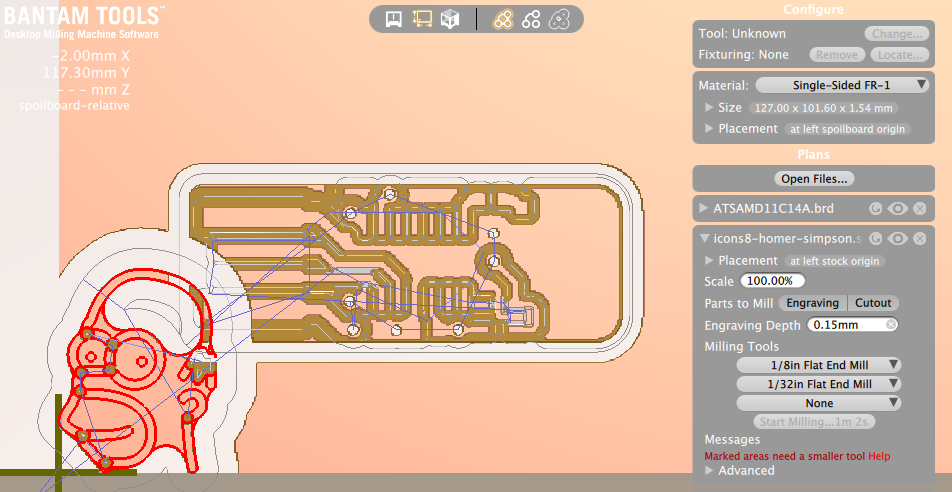NOTE: the Bantam app expects SVG version 1.0, if it is not 1.0 then some pieces of the design may be missing.
One of the new options allows us to "scale" the size of an image (as a percentage). I'm going to shrink this image so it is small enough to fit on the PCB.
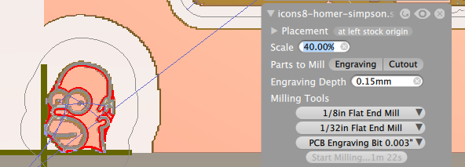Next I am going to de-select the Cutout button in the "Parts to Mill" section.
I do not want to cut through the board around Homer, I just want to engrave his face.
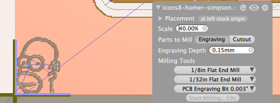Then finally, I'll change it's position so that it fits inside my PCB, in a safe area.
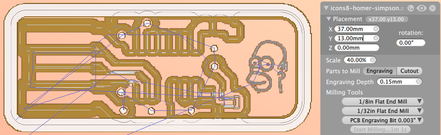Now you can mill the drawing, just like you would mill an Eagle file.
Double Sided Boards
We can mill a double-sided PCB design on the Bantam milling machine, by simply flipping the board over to mill the back.
However, there are some important steps to be take to be sure it is accurate.
To start, you must use the PCB bracket when milling a double sided board. You also must have gone through the brack probing process as described in the Bantam Setup guide.
Then, when milling the top side, make sure the PCB material was pushed into the bottom-left corner of the brack.
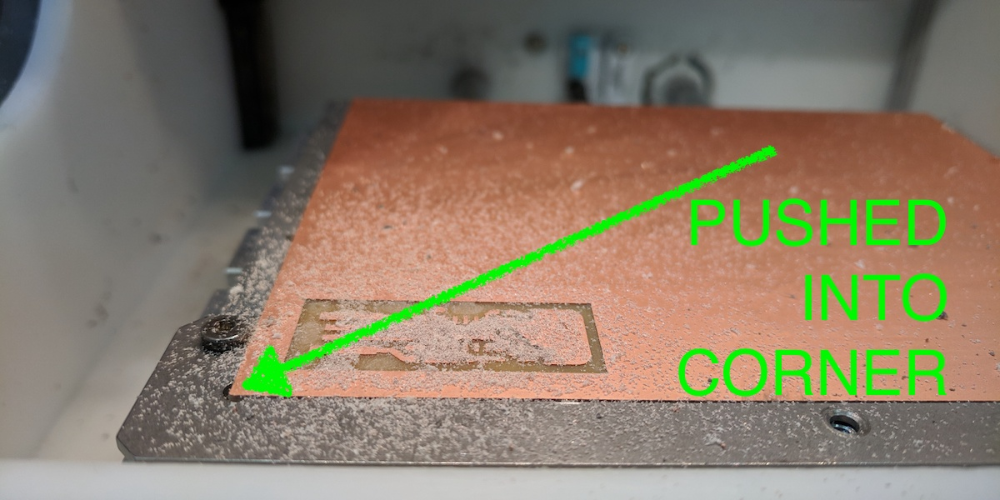Do not mill the board cutout when milling the top of the PCB. We need to keep the entire PCB material uncut, so we can rotate it.
After milling the top side, you can remove your PCB just like you normally would when milling a single-sided PCB.
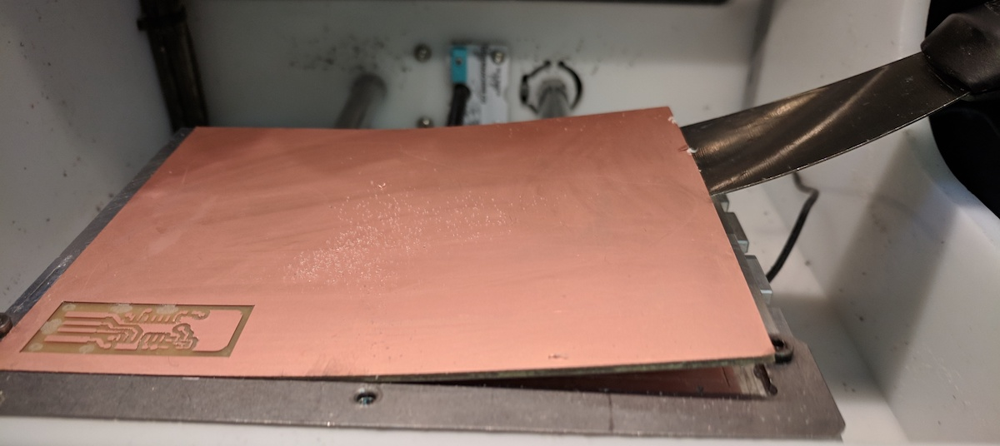Remove the tape from the bottom.
We will now be putting tape on the top of the board (where the routes were just cut). Before adding tape, clean the top with 91% isopropyl alcohol.
Also, do not forget to clean the Bantam's aluminum bed with the 91% isopropyl alcohol too. Don't let any small pieces of dirt, or old pieces of tape, stay there.
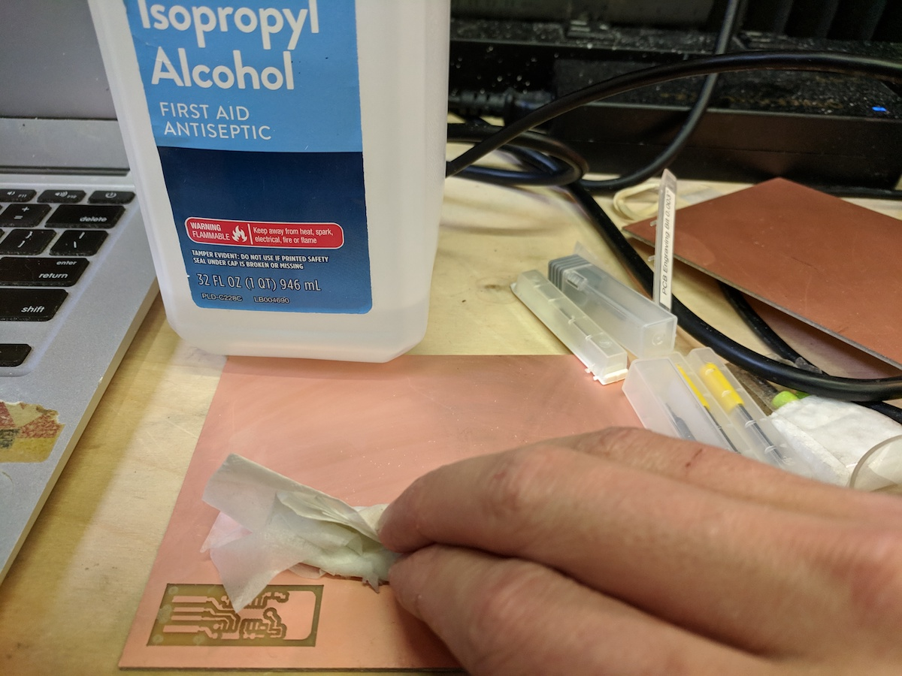Then add double-sided permanent tape over the milled PCB top layer.
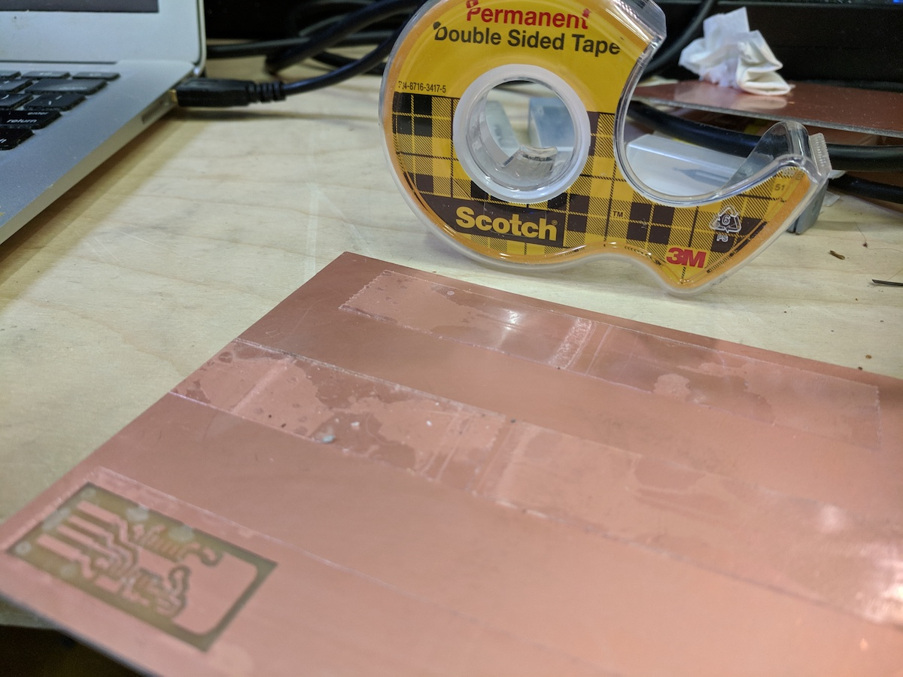Now, on the Bantam, place the copper board so that your milled design is in the bottom-right corner now.
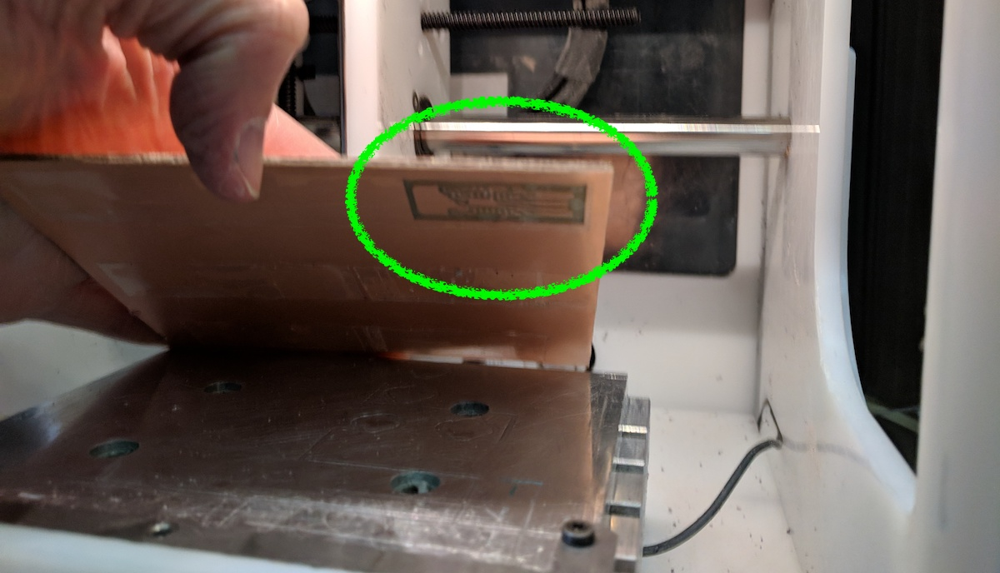With the top layer facing down, push the corner of the PCB material into the bracket.
This is very important, because it is this alignment that will make your bottom milled layer align perfectly with your top milled layer.
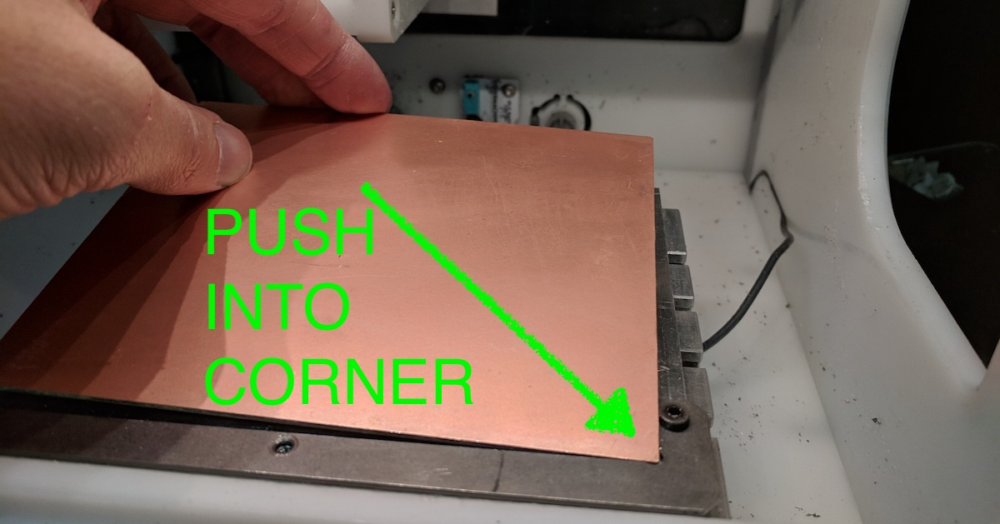Press the copper board down so that is it fully stuck. We do not want it to move while we are milling.
In the Bantam software, we need to tell it that we are now going to mill the bottom of our PCB.
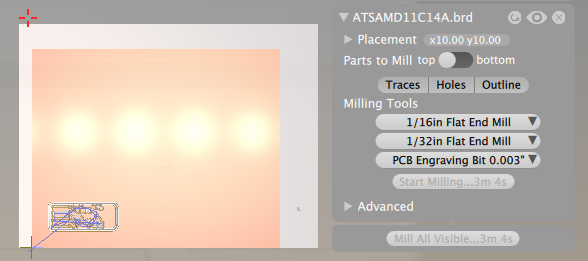In the file section on the right, find the switch that changes between "top" and "bottom". By default it will be in the "top" position, and clicking it changes to "bottom".
Try clicking this a few times. You will see that the board in the app not only flips horizontally to show the bottom, but it also moves the board to press again the right side of the backet (instead of the left side like for the top).
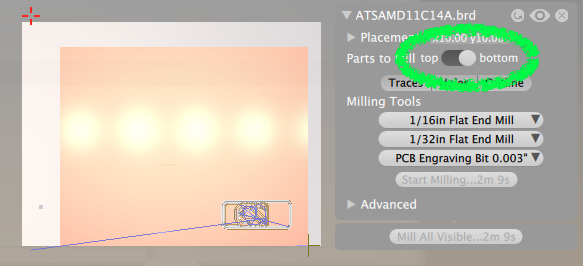Once it is flipped, you can proceed with milling just like you normally would (as described in the Bantam Milling 1 guide).
After milling, I can see the bottom routes, holes, and cutout look good.
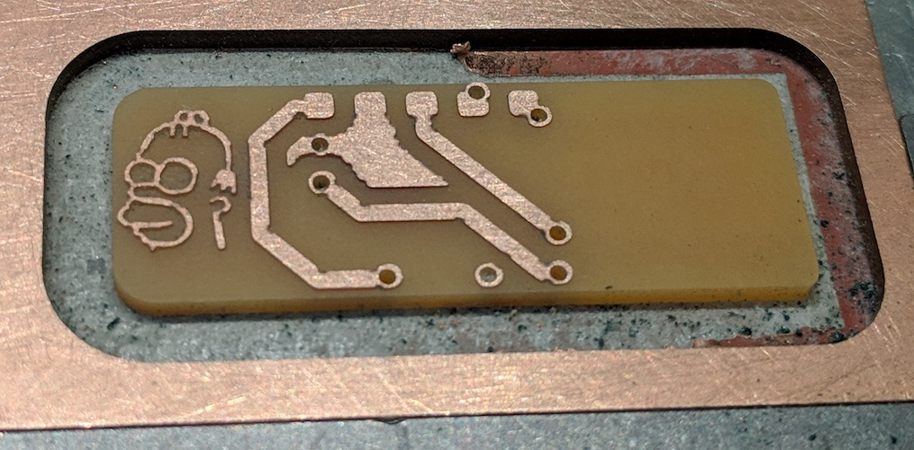And now, the most important moment, when we can see if our top layer lines up with the holes.
When I flip my board over, I can see that the holes are a tiny bit off center, but I think they are good enough to use (yay!).
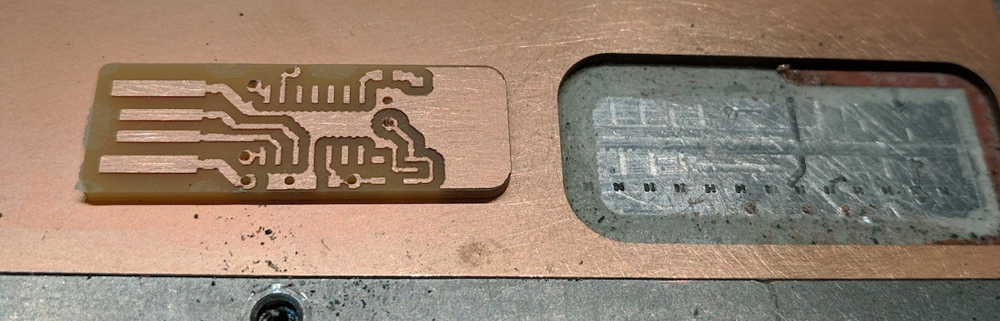Accurate Ground Planes
The Bantam software has this one issue that can be bad for some PCB: it ignores your ground plane shape. Regardless of where you put your ground plane, the Bantam will leave extra copper all over the board.
To visualize what I'm talking about, lets take a look at a board design that I want to mill.
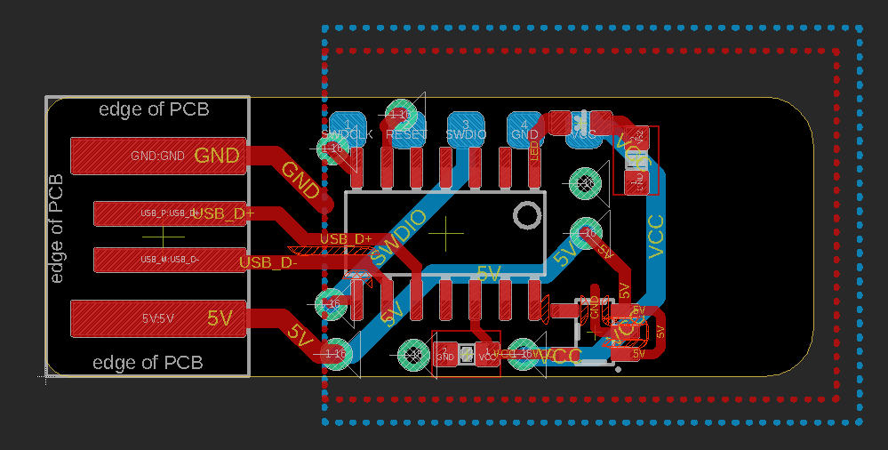 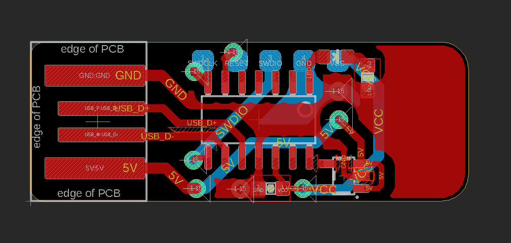This board is designed to fit into a USB-A connector (like on a computer).
Because the USB portion will be going inside my computer, I do not want any copper on top or bottom of the USB section (except the USB pads themselves).
Extra copper might cause a short-circuit inside my computer (ouch!).
That is why I placed a ground plane (both top and bottom layers) that does not go over the USB section of the board (on the left side).
However, in the Bantam software, the PCB looks like the picture below. The picture below shows the bottom of the board, so it is flipped over. The USB connector is now on the right side (because it flipped over).
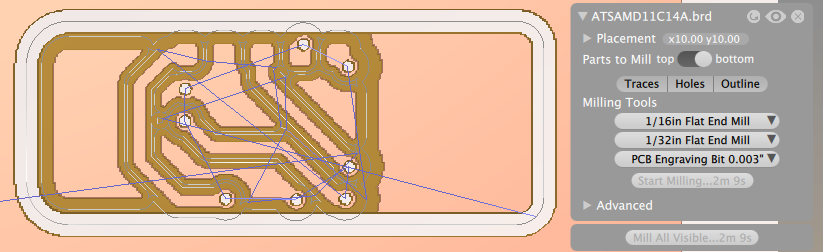There is copper underneath the USB connector! In my Eagle file, there is no copper there, but the Bantam software ignores this and just leave copper untouched there.
This would be dangerous for me, so I need to figure out how to mill my ground plane accurately so my project doesn't break my computer's USB ports.
To solve this, I can create an SVG file from my Eagle file, and then use that SVG file in Bantam to mill my accurate ground plane.
First, I need to turn my Eagle file into an image.
Before creating an image, I want to show only the layers that are a part of the bottom copper layer (bottom, vias, and pads), and I'll include the cutout dimension layer too so there is a border.
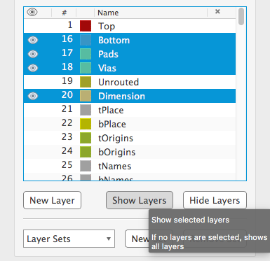Now in my board, I can only see copper on the bottom, and the board cutout.
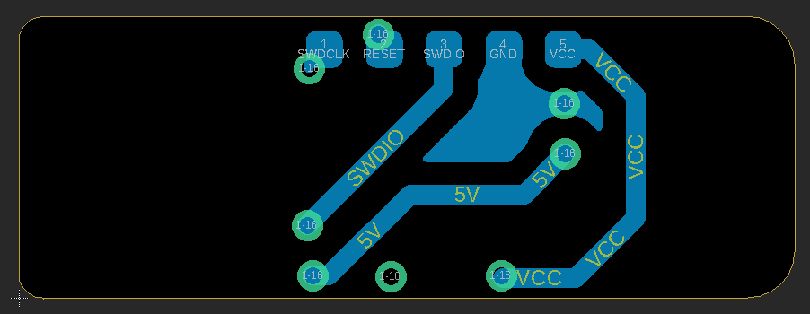Next, I'll go to File -> Print, and it is here that we can export a PDF file.
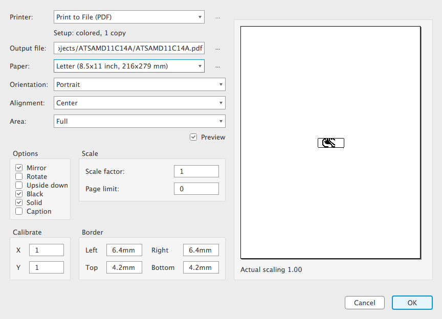In the print options window, select your destination to be a local PDF file.
First, sure the "scale" of the image is 1 (as in "100%"). If this number does not equal 1, then your image will not be an accurate size.
Second, in the checkboxes below, select "Solid" and "Black".
Finally, if you are printing a bottom layer (like I am right now), then click the "Mirror" checkbox. However, if you are printing the top layer, then leave the "Mirror" checkbox un-selected.
Now I'm going to open this new PDF file in Adobe Illustrator.
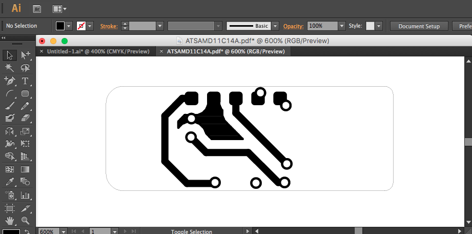Before doing anything, we're going to pull all the vector paths out of the nested groups/clips that the PDF file created. And we're going to get all those paths to the top-most layer in Illustrator (this will make it easier to edit them later).
This edit is made with the Windows -> Layers window.
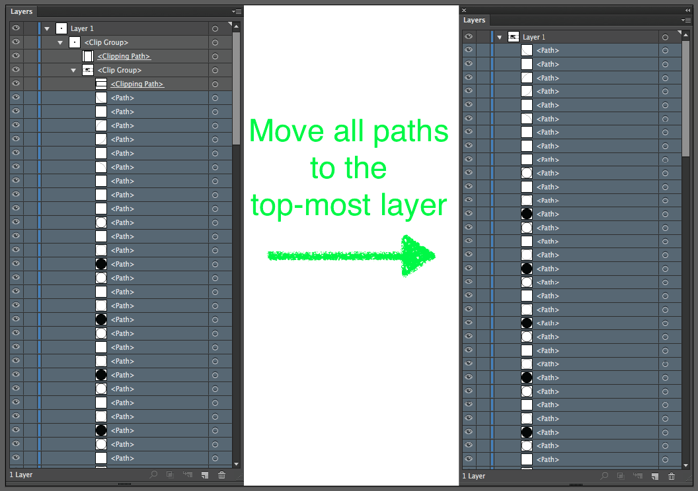Then, before we get too far, let's create an SVG file. Go to File -> Save As..., and select the SVG file format.
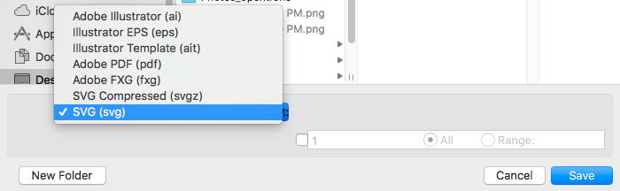Before the SVG is generated, Illustrator gives you some options specific to SVG files. Select the SVG version 1.0 from the dropdown menu before saving.

NOTE: the Bantam app expects SVG version 1.0, if it is not 1.0 then some pieces of the design may be missing.
Let's load it into Bantam and see what it looks like.
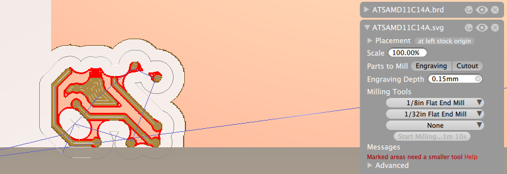That looks bad! We need to play with the file settings to make it look better.
First, I can see that Bantam does not see the outline of the PCB. See how it thinks the cutout is around the routes, and not the actual board cutout.
That is because the cutout lines, in Illustrator, have a stroke weight of 0 (zero). In Illustrator, I'll set the cutout lines to have a stroke weight of 0.1pt, and then reload it in Bantam.
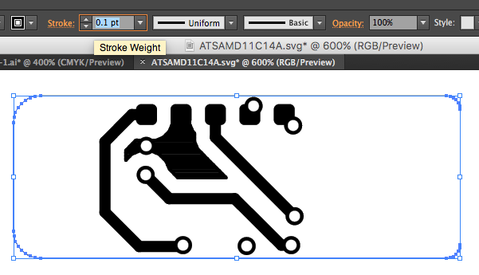Now when I re-load it in Bantam, it looks much better. I can see the real board cutout.
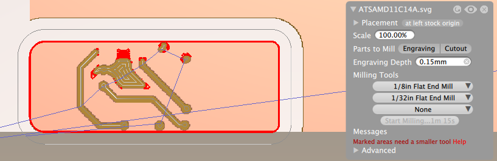There is another big problem: Bantam is milling the opposite of what we actually want to mill. I want it to mill around my routes, but Bantam right now is saying it will mill inside my routes.
This can be changed in the "Advanced" section for the file in Bantam. Then, in the "Invert" dropdown menu, select Yes, within cutout.
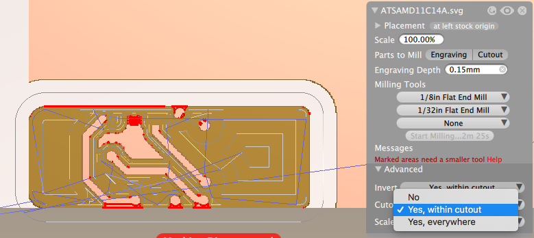Much better!
There is one last problem with our file. If I zoom in to the design in Bantam, I notice that all the square or rectangular copper pads are being ignored (why???).
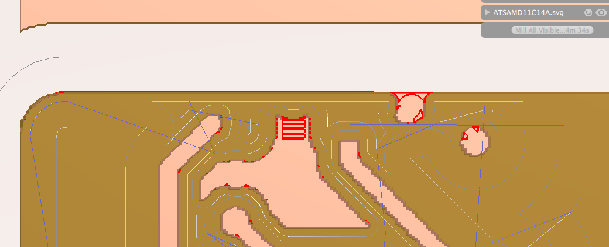There are two things happening to create this:
- When Eagle exports a PDF, it creates two paths for each square, one that is filled and another that has no fill
- Bantam will ignore any square that has two squares stacked on top each other (I don't know why).
So, in Illustrator, I'll first highlight the filled squares. I'm being careful not to select and highlight the borders of these squares.
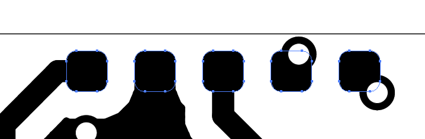After highlighting, I delete all the filled squares, so that now I only see the squares that have the thin outline.
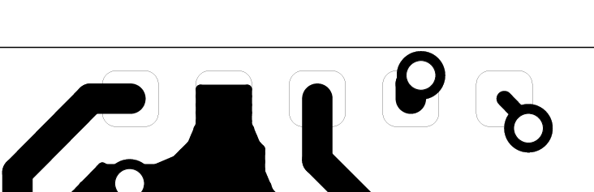Finally, highlight the remaining squares with strokes, and now give them all a solid black fill.
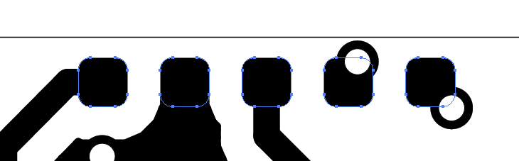Re-load the SVG file in Bantam, and now you will be able to see the square copper pads.
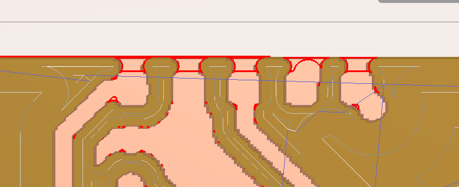The last and final step is to manually line up the SVG file with your BRD file.
The easiest way to to do this is to:
- Hide the Cutout from the SVG file (you can cutout using the BRD file)
- Hide the Traces from the BRD file (you will cut traces using the SVG file)
- Show the BRD's Holes and Cutout toolpaths
- Show the SVG's Engraving toolpath
And then, adjust the SVG file's millimeter position, until the holes perfectly line up.
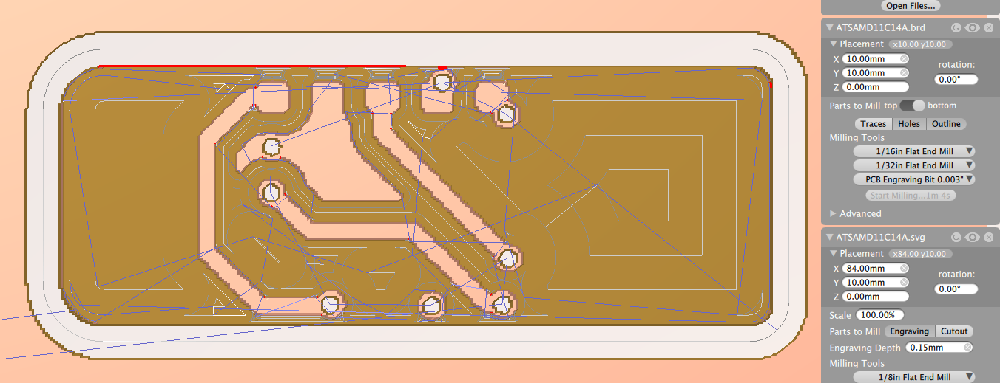{kind=link}
Now our ground plane is exactly as we designed in the Eagle file (Huzzah!!!).